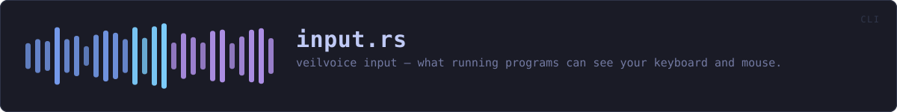

crates/veilvoice-cli/src/input.rs
veilvoice-cli · 117 lines · read the source here · or on GitHub
veilvoice input shows which running programs can see your keyboard and mouse.
The whole command is arranged around one risk: that somebody runs it, sees nothing listed, and concludes their machine is clean. That conclusion is wrong and acting on it makes them less safe than not having looked, so the limits are printed with the result rather than behind a flag, and they are printed whether anything was found or not.
In plain words
This tells you which of the programs currently open on your computer are able to see what you type or where you click. Most of them will be things you installed on purpose, such as a password manager, a screen reader, remote support software you use for work.
It cannot tell you whether anything is actually recording your typing. No program can, and this one says so every time rather than letting a short list look like good news.
WHAT THIS FILE CONTAINS
117 lines defining 2 functions (2 public), 0 types and 0 constants. Everything below is read out of the source, so it cannot disagree with the code.
What happens when it runs. These are the ways in: public, and nothing else in this file calls them, so they are what an outside caller reaches first.
lookline 25 · Show what can see input on this machine.knownline 84 · Everything this build knows how to recognise, whether running or not.
WHAT CALLS WHAT
The functions this file defines, and the calls between them. An edge means the callee's name appears, called, inside the caller's body. This is a syntactic reading, not a type-resolved one.
The same graph as Mermaid source
%%{init: {"theme":"base","themeVariables":{"background":"#1a1b26","primaryColor":"#1f2335","primaryTextColor":"#c0caf5","primaryBorderColor":"#7aa2f7","secondaryColor":"#16161e","tertiaryColor":"#16161e","lineColor":"#737aa2","textColor":"#c0caf5","mainBkg":"#1f2335","nodeBorder":"#7aa2f7","clusterBkg":"#16161e","clusterBorder":"#2f3549","fontFamily":"ui-monospace, SFMono-Regular, Consolas, monospace","fontSize":"14px"}}}%%
flowchart TD
n_look(["look<br/>line 25"])
n_known(["known<br/>line 84"])
click n_look href "https://github.com/tilas01/veilvoice/blob/main/crates/veilvoice-cli/src/input.rs#L25" "open the source"
click n_known href "https://github.com/tilas01/veilvoice/blob/main/crates/veilvoice-cli/src/input.rs#L84" "open the source"
classDef entry fill:#1f2335,stroke:#7aa2f7,color:#c0caf5
class n_look,n_known entryThis site loads no third-party script, so it cannot run Mermaid; the diagram above is the same nodes and edges drawn by the generator instead. GitHub renders the source below directly.
ITEMS
| Item | Line | Documentation |
|---|---|---|
look pub fn | 25 | Show what can see input on this machine. |
known pub fn | 84 | Everything this build knows how to recognise, whether running or not. |